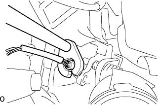
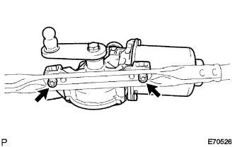

Oxygen sensor installation |
| 1. Oxygen sensor installation |
|  |
Use SST to attach the oxyde ensenser.
Connect the connector.
| 2. Cowl top panel OUT installation |
Attach the cowtotpanel OUT with nine bolts.
Attach a wire harness gromet.
| 3. Wind shield wipmotor ASSY installation |
|  |
Use a torxo wrench (T30) to attach a windshield wipa motor ASSY with two bolts to the windshield wiperink associate.
Wind Shield Wipa Motor ASSY crank arm grease is applied to the pivot part of the pivot, and a windshield wiperink arm is attached.
| 4. Wind shield wiplink Assisted |
 |
Wind shield wiperink ASSY is inserted into the pin with the windshield wipa motor ASSY.
With two bolts, attach a windshield wiperink Assy.
Connect the connector.
| 5. Cowl top ventilator louvor LH installation |
 |
Match the clip and eight claws and attach the cowl top ventilator LH LH.
| 6. Cowl top ventilator louvor RH installation |
 |
Found two clips and seven claws, and attach the cowl top ventilaarver RH.
| 7. Food toe cowl top seal installation |
 |
Six clips and attach the hood (hud) tsu cowl top seal.
| 8. Lord wiperarm RH installation |
 |
Clean the wire brush of the wire brush.
Clean the Wiper Arm Selation with a circle or crossing.(When re -assembling)
 |
Attach the front wiperarm RH with a nut so that the front wiper blade comes to the position in the figure.
| 9. Lord wiperarm LH installation |
Clean the wire brush of the wire brush.
Clean the Wiper Arm Selation with a circle or crossing.(When re -assembling)
 |
Attach the front wiperarm LH with a nut so that the front wiper blade comes to the position in the figure.
The front wiper is activated while applying water or washer solution on the glass to confirm that it does not interfere with the blade dispatch status and the body.
| 10. Air Cleaner ASSY installation |
Four bolts are attached to the air cleaner case, the No.1 air cleanine rets and the air clenine Retsu NO.2.
Attach the air cleaner fillyer.
Attach the air cleaner kyup and air cleaner hose No.1.